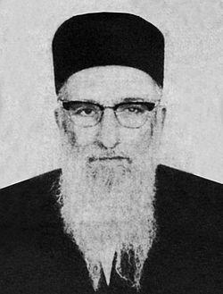

Home / Sources & Contribute
Sources & Contribute
This site is a work in progress, compiled primarily from one family document and the sefarim it draws on. It will always be incomplete — that's an invitation, not an apology.
Primary Sources

- לקדושים אשר בארץ (Lekedoshim Asher Ba'aretz) — compiled by Chacham David Ben Tzion Laniado from gravestone records he copied in Aleppo and interviews with the community's elders; later expanded and translated by Rabbi David Sutton as "Aleppo, City of Scholars." The foundation for nearly everything on this site.
- כסא שלמה (Kisei Shlomo) — Rabbi Refael Shlomo Laniado's own writing, including his account of his grandfather and the family's earliest history.
- Introductions and haskamot (approbations) printed in the family's own sefarim — כלי פז, מגן אברהם, נקודות הכסף, and others — which frequently include biographical notes about the author's father or grandfather.
- Testimony recorded by later family members, including חכם ר׳ יעקב שאול דוויך הכהן's דרך אמונה, which preserves details of Rabbi Meir Laniado "HaRav HaSofer" and his family.
- A handwritten genealogical chart from לקדושים אשר בארץ, reproduced on the Family Tree page.
On Uncertainty
Several relationships in this history are noted, in the sources themselves, as uncertain — which generation a rabbi belongs to, whether a figure is the son of one relative or another, or even an exact date. Where that's the case, this site says so directly rather than presenting a single account as settled fact. Family members with access to more precise records are especially encouraged to help resolve these.
What's Still Missing
Corrections to names, dates, and relationships; additional photographs (only two are currently on the site); the exact family connection between the Chief Rabbis of Aleppo and the Swiss Laniado family behind Laniado Hospital; more detail on the grandchildren and great-grandchildren of Chacham David Ben Tzion Laniado; and any family documents, letters, or sefarim not yet reflected here.
How to Contribute
This site does not yet have a submission form. For now, corrections and additions can be passed along to whoever maintains this site on the family's behalf, to be incorporated directly into the relevant page. As the site grows, a proper contribution process — likely a simple form or email address — will be added here.